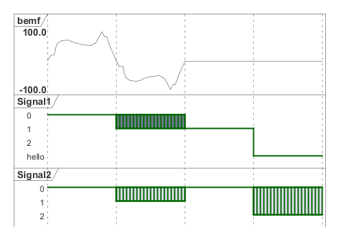

@startuml
hide time-axis
scale 100 as 100 pixels
analog "bemf" as out
robust "Signal1" as S1
robust "Signal2" as S2
S1 has 0,1,2,hello
S2 has 0,1,2
@0
S1 is 0
S2 is 0
@100
S1 is {0,1} #SlateGrey
S2 is {0,1}
@200
S1 is 1
S2 is 0
@300
S1 is hello
S2 is {0,2}
@0
@+0.0
out is 0.0
@+4.0
out is 18.0
@+6.0
out is 21.0
@+1.0
out is 40.0
@+3.0
out is 59.0
@+6.0
out is 69.0
@+10.0
out is 71.0
@+5.0
out is 68.0
@+5.0
out is 62.0
@+12.0
out is 54.0
@+11.0
out is 52.0
@+7.0
out is 61.0
@+9.0
out is 100.0
@+4.0
out is 84.0
@+3.0
out is 83.0
@+5.0
out is 49.0
@+9.0
out is 1.0
@+0.0
out is 0.0
@+4.0
out is -18.0
@+6.0
out is -21.0
@+1.0
out is -40.0
@+3.0
out is -59.0
@+6.0
out is -69.0
@+10.0
out is -71.0
@+5.0
out is -68.0
@+5.0
out is -62.0
@+12.0
out is -54.0
@+11.0
out is -52.0
@+7.0
out is -61.0
@+9.0
out is -100.0
@+4.0
out is -84.0
@+3.0
out is -83.0
@+5.0
out is -49.0
@+9.0
out is -1.0
@enduml